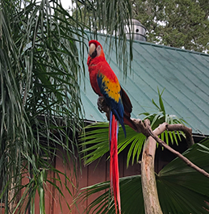
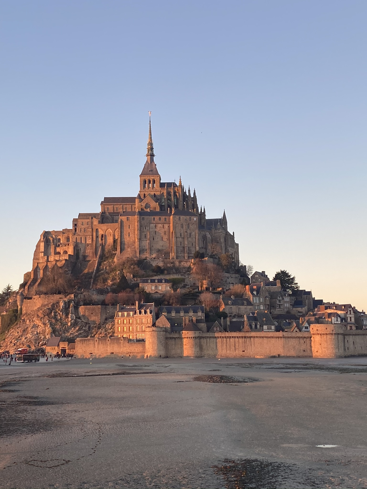

Planning our Trip to Europe
Two years ago my family and I went to Europe, to explore and create new memories outside of the United States. We spent months planning out our trip, from basic things like hotels and flights, to specific restuarants we needed to try and tourist sports we wanted to see. We asked a few family friends who had gone before what they remembered the most, and tried to include those recommendations in our plans. I made a list of all the highlights in each place we planned to stop: London, Normandy, Mont Saint Michel, and Paris. Each person in our family then picked out five places or locations they wanted to see, in order to narrow down the daunting list of suggestions. We bought the London Pass that included a sight seeting bus, so travelling around the city would be less time consuming, and so we could see landmarks without having to actually stop. We also decided to fly from a town outside London to Normandy, France, instead of taking the Eurostar into Paris. Instead of three nights in London and four nights in Paris, we decided to spend a night in the beautiful castle of Mont Saint Michel, in order to get the full experience of tide change.
Along with staying in Mont Saint Michel, we decided to drive from Normandy to the castle instead of taking a train, so we could see the beautiful countryside. After many changed hotel rooms and edited plans, we finally had a rough draft that everyone was happy with, and we were ready to finally take the trip. Our family left the day after Christmas, December 26th, and returned January 3rd.
The Highlights of England
After landing in Heathrow Airport, we were all exhausted and hungry. We took our luggage onto the subway, and had a fourty five minute ride to a stop near our hotel. After checking in, we slept for two hours to try and get rid of the jetlag. That night, we walked around the city and went on the London Eye, which showed a beautiful view of the city. The next two days were non stop, and we used a tour bus to get around the city. We stopped at the Shard, Big Ben, Buckingham Palace, the Tower Bridge, and other big tourist spots. As a surprise, our parents got us tickets to the broadway show Hamilton, which was amazing.
Although we took a tour bus to get around the city, we still ended up walking about ten miles each day. We only used the subway a few times, one of which being an hour long ride from London to a small town called Ware. Because it was close to the airport, we spent our last night in England there. We woke up at four in the morning to catch our next flight to Normandy, France.
Our Adventures in France
France was our last stop of the trip, and it started in Normandy. Here we saw old tanks from D-Day, and other war relics. We also visited a memorial for all who lost their lives during the brave effort to retake France. We rented a car and drove two hours to Mont Saint Michel, which is an old castle on an island. It is only accesible when the tide is out, and a land bridge appears. Once the tide comes in, the island is closed. It was amazing, and one of my favorite parts of the trip. After spending a night, we drove to Paris.
Paris was beautiful, and so unique. Each storefront was a different color, and the history behind each building was amazing. We decided to do a river cruise, to see all the bridges that connected the city, as well as get a great view of the Notre Dame and the Eiffel Tower. At midnight on New Years Eve we watched fireworks from a bridge near our apartment, and watched people celebrate. The trip was amazing, and I'm so glad we were able to go.